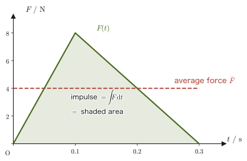

Chapter 2Newton's Laws of Motion — Momentum and Angular Momentum
Many readers probably learned the equation of motion in high school physics as the scalar equation $ma=F$, in which direction need not be considered. But bodies move not only along a straight line but also in a plane and in space, and forces have directions as well. Therefore, in Chapter 1 we reworked position, velocity, and acceleration as boldface vectors $\bm{r},\bm{v}=\dot{\bm r},\bm{a}=\ddot{\bm r}$. In this chapter, using those tools, we rewrite once more the three laws of motion that Newton presented in the “Principia,” taking the vector equation $\bm F=m\ddot{\bm r}$ as our starting point.
The first thing to notice is the fact that the first law, “if there is no force, a body remains at rest or continues in uniform rectilinear motion,” can in fact be derived mathematically from the second law. Why, then, did Newton go out of his way to state it as an independent law? Hidden here is a deep claim bearing on the foundation of all of mechanics: that “an inertial frame of reference exists somewhere in the universe.”
Next, if we rewrite the equation of motion not as $\bm F=m\ddot{\bm r}$ but as $\bm F=\dd\bm p/\dd t$ using the momentum $\bm p=m\dot{\bm r}$, it becomes the starting point for considering bodies whose mass changes (a raindrop is an example), and the quantity called “impulse,” the integral of force over time, appears naturally. Combined with the third law (the law of action and reaction), it leads to one of the most important conservation laws in mechanics—the conservation of momentum, according to which the sum of the momenta of two bodies subject to no external force is always constant.
Finally, if we take the cross product (vector product) of both sides of the equation of motion with the position vector, the quantities used to treat “rotation,” namely the torque (moment of force) and the angular momentum, appear, and we obtain the rotational equation of motion $\bm N=\dd\bm L/\dd t$.
At the end of the chapter we take up collisions as an application of conservation of momentum, and treat the two extreme cases, elastic and inelastic collisions, in a unified way using a quantity called the “coefficient of restitution.”
- That Newton's first law can be derived mathematically from the second law $m\ddot{\bm r}=\bm 0$, and the significance of nevertheless stating it as an independent law (the existence of inertial frames)
- How to write the equation of motion $\bm F=\dd\bm p/\dd t$ using the momentum $\bm p=m\dot{\bm r}$, and how to treat a system whose mass changes (a raindrop), taking into account even the momentum of the matter it takes in
- The definition of impulse $\int_{t_1}^{t_2}\bm F\,\dd t$, and the derivation of the impulse–momentum theorem $\bm p(t_1)+\int_{t_1}^{t_2}\bm F\,\dd t=\bm p(t_2)$
- The third law (the law of action and reaction) $\bm F_{AB}=-\bm F_{BA}$, and the distinction between internal and external forces
- The proof of conservation of momentum for a two-body system, and its generalization to a system of $N$ particles (point masses)
- The derivation of the torque $\bm N=\bm r\times\bm F$, the angular momentum $\bm L=\bm r\times\bm p$, and the rotational equation of motion $\bm N=\dd\bm L/\dd t$
- (Advanced) How to treat one-dimensional collisions (elastic and inelastic collisions) using the coefficient of restitution, and the formula for the kinetic energy lost in a collision
Source notes: Yasuhide Mochizuki, Physics Notes: Mechanics, pp. 1–4.
2.1 Newton's First Law and Inertial Frames
The law of motion that we first learn in high school physics is the law of inertia: “if no force acts on a body, the body continues to remain at rest or to move in uniform rectilinear motion.” This is Newton's first law.
Law 2.1: Newton's first law (the law of inertia)
As long as no external force (a force acting on the body from outside it) acts on a body, the body continues to remain at rest or to move in uniform rectilinear motion (rectilinear motion in which the speed and the direction do not change).
Here, “no external force acts” includes not only the case in which no force acts at all but also the case in which several forces act but their resultant is $\bm 0$ (they are balanced). This is the same content as the high school physics statement “when no force acts, or when forces act but are balanced.”
This law actually has a slightly curious feature. If we accept Newton's second law (the equation of motion) $\bm F=m\ddot{\bm r}$, which we will see in Section 2.2, the first law follows automatically as a special case of it (the case $\bm F=\bm 0$). Let us derive it.
Derivation: Deriving the first law from the second law
To keep things simple, consider the case in which a particle moves only along a single straight line (the $x$-axis). If no external force acts on a particle of mass $m$ ($F=0$), the equation of motion $m\ddot x=F$ becomes
$$ m\ddot x=0 $$Since $m\neq0$, we may divide both sides by $m$ to get $\ddot x=0$. This means that “differentiating the velocity $\dot x(t)$ once more with respect to time $t$ gives identically 0,” so $\dot x(t)$ must be a constant independent of time $t$ (this follows from the basic fact of differentiation that a function whose derivative is identically 0 is a constant; this fact is shown from the mean value theorem, University Mathematics, Section 2.3. One may also reason that if $\dot x(t)$ had any part that varied with $t$, then its derivative $\ddot x(t)$ would take a nonzero value somewhere). Denoting this constant by $C_1$, we obtain
$$ \dot x(t)=C_1\qquad(C_1: \text{constant}) $$All that remains is to split into cases according to the value of $C_1$.
(i) The case $C_1=v_0\neq0$. Since $\dot x(t)=v_0$ means that “the velocity is always the constant value $v_0$ (the initial velocity),” integrating it once more with respect to $t$ (choosing the constant of integration so that $x(0)=0$, on the supposition that the particle was at the origin at time $t=0$) gives
$$ x(t)=v_0t $$This says that the particle continues in uniform rectilinear motion with speed $\abs{v_0}$ in the direction given by the sign of $v_0$.
(ii) The case $C_1=0$. Integrating $\dot x(t)=0$ once more (again with $x(0)=0$) gives $x(t)=0$, and the particle remains at rest at the origin forever.
The three-dimensional case. In the general case in which the particle moves through space, if we read the equation of motion $m\ddot{\bm r}=\bm 0$ component by component as $m\ddot x=0,\ m\ddot y=0,\ m\ddot z=0$, exactly the same argument as above can be made for each component. That is, the velocity vector is a constant vector independent of time, $\dot{\bm r}(t)=\bm v_0$, and integrating once more gives $\bm r(t)=\bm r(0)+\bm v_0t$. If $\bm v_0\neq\bm 0$, the motion is along a straight line with unchanged direction and speed; if $\bm v_0=\bm 0$, the particle is at rest.
∎
Putting (i) and (ii) and the extension to three dimensions together, a particle subject to no external force can only either remain at rest or continue in uniform rectilinear motion—and this is precisely Law 2.1 (the first law) itself.
Discussion: If it can be derived, why is it stated as an independent law?
Some people think, “Since the first law is merely a special case of the second, there is no need to state it independently.” But a deeper meaning is built into this law. The “force” on the left side and the “acceleration” on the right side of the equation of motion $\bm F=m\ddot{\bm r}$ have no meaning unless we first decide from which observer (which coordinate system) the motion is viewed. For example, to a person standing in a train that is braking suddenly, a piece of luggage resting on a smooth seat or floor (where friction is negligible) is subject to no horizontal force, and yet it seems to suddenly start sliding forward—if we naively apply the equation of motion $\bm F=m\ddot{\bm r}$ (no force means zero acceleration) inside the train, we run into a contradiction.
The first law can therefore be read as asserting that “there exists, somewhere in the universe, at least one special observer (coordinate system) for whom no such contradiction arises.” Such a special coordinate system is called an inertial frame. Moreover, once one inertial frame has been found, every coordinate system moving at a constant velocity relative to it (for example, a train running along a straight line at constant speed) is also an inertial frame. Newtonian mechanics is a theory that has meaning only on the premise that such inertial frames exist, and the first law is, so to speak, a law that declares the foundation of the whole theory: that “there exists a stage (an inertial frame) on which we are to argue using the equation of motion.” Describing motion as seen by an accelerating observer such as the train (a non-inertial frame) requires a device different from that for an inertial frame (fictitious forces)—we treat this point in detail in Chapter 9 (on rotating frames and the fictitious force, or inertial force).
Example 2.1: Why the first law appears to fail in a non-inertial frame
A train running on a straight, level track is decelerating with a constant acceleration $\bm a_0$ (directed opposite to the direction of travel, that is, in the direction of deceleration by braking). A piece of luggage rests on a smooth seat in the train (friction is negligible). Gravity and the normal force act on the luggage, but they balance each other, and the horizontal force is $\bm 0$. How does this luggage appear to move to an observer in the train (an observer moving together with the train)? Also, explain whether this contradicts the first law (Law 2.1).
Solution. To an observer at rest relative to the ground (neglecting the rotation of the Earth and the like, we regard the ground as approximately an inertial frame), no horizontal force acts on the luggage, so, in accordance with Law 2.1, the luggage continues in uniform rectilinear motion (it was originally moving at the same velocity as the train, so it keeps that velocity). That is, the acceleration of the luggage as seen from the ground is $\ddot{\bm r}=\bm 0$.
Let $\bm r_{\text{train}}$ be the position vector of the train; the train moves with acceleration $\ddot{\bm r}_{\text{train}}=\bm a_0$. The position of the luggage as seen by the observer in the train is $\bm r'=\bm r-\bm r_{\text{train}}$, so differentiating it twice with respect to time gives
$$ \ddot{\bm r}'=\ddot{\bm r}-\ddot{\bm r}_{\text{train}}=\bm 0-\bm a_0=-\bm a_0 $$That is, to the observer in the train, the luggage appears to slide forward with acceleration $-\bm a_0$ (opposite to $\bm a_0$, that is, toward the front, in the direction of the train's travel). Although in reality no horizontal force acts on the luggage, the luggage as seen from inside the train is in accelerated motion, so for the observer in the train it looks as if the equation of motion $\bm F=m\ddot{\bm r}$ (and hence the first law) fails to hold: an acceleration arises even though there is no force.
It is not that the laws of physics themselves have broken down; it is only that, because we chose as our reference the observer inside the train (a non-inertial frame in accelerated motion), the first law, which presupposes an inertial frame, no longer holds in its original form. If we choose again an inertial frame such as the ground as the reference, Law 2.1 holds without contradiction. If one nevertheless wants to use the equation of motion in a non-inertial frame, one adds a “fictitious force” (inertial force) $-m\bm a_0$, which does not actually exist, and writes $m\ddot{\bm r}'=\bm F+(-m\bm a_0)$ (here $\bm F=\bm 0$); this can then explain the luggage's acceleration $-\bm a_0$. We will learn how to handle this in Chapter 9.
2.2 Newton's Second Law — The Equation of Motion, Momentum, and Impulse
In high school physics you will have learned the equation of motion as $ma=F$ (a relation between magnitudes only) or, at most, in a form split into its $x$ component and $y$ component. In university mechanics we write it from the start as a vector equation,
Law 2.2: Newton's second law (equation of motion)
When an external force $\bm F$ (the resultant force, if several forces act) acts on a body, the body acquires an acceleration $\ddot{\bm r}$ that is proportional to $\bm F$ and in the same direction as $\bm F$. That is,
\begin{equation} \bm F=m\ddot{\bm r}\qquad(m:\ \text{mass of the body}\ [\mathrm{kg}]) \label{eq:2-second-law-ma} \end{equation}holds.
The relation $\bm F=m\ddot{\bm r}$ has the same content as $F=ma$ in high school physics, in the sense that the force $\bm F$ and the acceleration $\ddot{\bm r}$ are proportional; but by writing them as boldface vectors, a single equation also expresses that the force and the acceleration have “the same direction.”
Definition 2.1: Momentum
For a body of mass $m$ and velocity $\bm v=\dot{\bm r}$, the quantity
\begin{equation} \bm p\equiv m\dot{\bm r} \label{eq:2-momentum-def} \end{equation}is called the momentum of that body (the symbol $\equiv$ means that the left-hand side is “defined” by the right-hand side). The unit of momentum is $[\mathrm{kg\,m/s}]$ ($=[\mathrm{N\,s}]$).
If we use momentum, then when the mass $m$ is constant in time ($\dot m=0$), the product rule (University Mathematics, Section 3.2) gives $\dd\bm p/\dd t=\dd(m\dot{\bm r})/\dd t=m\ddot{\bm r}+\dot m\dot{\bm r}=m\ddot{\bm r}$ (the term with $\dot m=0$ vanishes), so Eq. \eqref{eq:2-second-law-ma} can be rewritten as follows:
\begin{equation} \bm F=\frac{\dd}{\dd t}\bm p \label{eq:2-second-law-p} \end{equation}“The rate of change of the momentum of a body equals the external force (the resultant force) acting on it”—this equation merely restates, in different words, what Eq. \eqref{eq:2-second-law-ma} says mathematically (when the mass is constant).
Intuition: Why did Newton state the law in the form $\bm F=\dd\bm p/\dd t$?
In the “Principia,” Newton himself stated the second law in the form that the change in motion (the change in momentum) is proportional to the force applied. That is, the form that uses momentum, $\bm F=\dd\bm p/\dd t=\dd(m\dot{\bm r})/\dd t$, is closer to the original wording than $\bm F=m\ddot{\bm r}$ is. There are two main advantages to taking this form as the starting point.
The first is that there are bodies whose mass $m$ is not constant in time. For example, a small raindrop falling through the atmosphere gains mass as time passes, because it collects the surrounding water vapor as it falls. For such a system we cannot use $\bm F=m\ddot{\bm r}$ (the form with $m$ taken outside the derivative) as it stands; the starting point is to consider the momentum, including the change of mass—however, the form $\bm F=\dd(m\dot{\bm r})/\dd t$ holds as it stands only in limited cases, such as when the matter being taken in is at rest in the inertial frame being used. We confirm the concrete treatment and the caveats in Example 2.2.
The second is that momentum itself is a very important quantity for describing motion. As we will see next, when momentum is given the leading role, the idea of “impulse” arises naturally, and even for phenomena such as collisions, in which the force changes in a complicated way, impulse = change in momentum lets us handle them without following the time variation of the acceleration (the second half of Section 2.2, Section 2.6). It also leads on to conservation of momentum, which we study in Section 2.4. Momentum is a physical quantity with an independent importance that goes beyond a mere rewriting of $\bm F=m\ddot{\bm r}$.
Example 2.2: Equation of motion of a body whose mass changes (a raindrop)
A raindrop is falling vertically while collecting water vapor that is at rest relative to the ground, and the mass $m(t)$ of the raindrop at time $t$ keeps increasing. Neglect air resistance, take the gravitational force $mg$ to be the only force acting on the raindrop, and take the vertically downward direction as positive. (1) By counting the change in momentum during a short time $\Delta t$, find the equation of motion of the raindrop. (2) Answer which of $\bm F=\dfrac{\dd}{\dd t}(m\bm v)$ and $\bm F=m\dfrac{\dd\bm v}{\dd t}$ ($=m\bm a$) should be used. (3) When the mass of the raindrop increases at a constant rate $\mu=\dot m$ ($\mu\gt0$), find the speed $v(t)$, taking the mass at time $t=0$ to be $m_0$ and the speed to be $v_0$.
Solution. (1) Consider as a single system the raindrop of mass $m$ and speed $v$ at time $t$ together with the water vapor of mass $\Delta m$ that will be taken into the raindrop during the following time $\Delta t$. Since the water vapor is at rest relative to the ground, the momentum of this system at time $t$ is $mv+\Delta m\cdot0=mv$. At time $t+\Delta t$ the water vapor has been taken into the raindrop and forms a single body of mass $m+\Delta m$ and speed $v+\Delta v$, so the momentum is $(m+\Delta m)(v+\Delta v)$. Therefore the change in momentum during $\Delta t$ is
$$ (m+\Delta m)(v+\Delta v)-mv=m\,\Delta v+v\,\Delta m+\Delta m\,\Delta v\approx m\,\Delta v+v\,\Delta m $$The term $\Delta m\,\Delta v$ is dropped because it is a product of two small quantities and, in the limit $\Delta t\to0$, is negligible compared with the other terms. The external force acting on this system is the gravitational force $mg$, and the change in momentum equals the impulse $mg\,\Delta t$ (Theorem 2.1):
$$ m\,\Delta v+v\,\Delta m=mg\,\Delta t $$Dividing both sides by $\Delta t$ and taking the limit $\Delta t\to0$, and using $\Delta v/\Delta t\to\dot v=a$ and $\Delta m/\Delta t\to\dot m$, we obtain
$$ m\dot v+\dot m\,v=mg,\qquad\text{that is}\qquad \frac{\dd}{\dd t}(mv)=mg $$(The left-hand side is nothing other than the product rule, University Mathematics, Section 3.2: $\dfrac{\dd}{\dd t}(mv)=\dot mv+m\dot v$.)
(2) The correct one is $\bm F=\dfrac{\dd}{\dd t}(m\bm v)$ (Eq. \eqref{eq:2-second-law-p}). If we use only $m\bm a$, we overlook the term $\dot m\,\bm v$ in the result of (1): where we should have $m\bm a=\bm F-\dot m\,\bm v$, we would write $m\bm a=\bm F$, which gives an incorrect equation of motion. Physically speaking, the falling raindrop newly takes in water vapor that is at rest and must accelerate that mass up to its own speed $v$, and this is why the term $\dot m\,v$ appears (the acceleration of the raindrop is smaller than it would be if the mass did not increase). Only when $m$ is constant ($\dot m=0$) does this term vanish and we return to the familiar $\bm F=m\bm a$.
Caution: Here $\bm F=\dd(m\bm v)/\dd t$ could be used because the water vapor being taken in was at rest (velocity $u=0$) in the inertial frame being used (the ground). In general, when the velocity, in the inertial frame, of the matter being taken in (or ejected) is $u$, counting in the same way as in (1) (the momentum of the matter taken in is $\Delta m\cdot u$), we obtain
$$ m\dot v=F+(u-v)\,\dot m $$(When $u=0$, this is $m\dot v=F-v\dot m$, that is, it agrees with $F=\dd(mv)/\dd t$. If $u=v$, that is, if the matter taken in is moving with the same velocity, the extra term vanishes and $m\dot v=F$.) Therefore $\bm F=\dd(m\bm v)/\dd t$ is not a general equation of motion that can be used unconditionally for a body whose mass changes. $\bm F=\dd\bm p/\dd t$ holds unconditionally for the momentum $\bm p$ of the whole system of particles, including all of the matter that is taken in and all of the matter that is ejected. For example, in the problem of a rocket that accelerates while expelling fuel and thereby losing mass, the ejected gas leaves toward the rear at speed $u_{\text{rel}}$ relative to the rocket, so $m\dot v=F+u_{\text{rel}}(-\dot m)$ ($\dot m\lt0$) holds, and one must not apply $\bm F=\dd(m\bm v)/\dd t$ to the momentum $mv$ of the rocket alone.
(3) Substitute $m(t)=m_0+\mu t$ into $\dfrac{\dd}{\dd t}(mv)=mg$, obtained in (1), and integrate both sides with respect to $t$ (at $t=0$, $mv=m_0v_0$):
$$ m(t)v(t)-m_0v_0=\int_0^t(m_0+\mu t')g\,\dd t'=g\left(m_0t+\frac{\mu t^2}{2}\right) $$Dividing by $m(t)=m_0+\mu t$, we obtain
$$ v(t)=\frac{m_0v_0+g\left(m_0t+\frac12\mu t^2\right)}{m_0+\mu t} $$Check: setting $\mu=0$ (the mass does not increase) gives $v(t)=v_0+gt$, which brings us back to the free fall learned in high school (motion with constant acceleration and initial speed $v_0$). Also, in the case $m_0=0,\ v_0=0$ (the mass increases in proportion to time), $v(t)=gt/2$, so the acceleration is $g/2$, which is smaller than the gravitational acceleration $g$.
Putting Eq. \eqref{eq:2-second-law-p} to use in another direction leads to a quantity that expresses the “effect of a force over time.” Let us take the definite integral of both sides of Eq. \eqref{eq:2-second-law-p} from time $t_1$ to $t_2$.
Derivation: The relation between impulse and momentum
Take the definite integral of both sides of Eq. \eqref{eq:2-second-law-p} from $t_1$ to $t_2$ (the definite integral of a vector-valued function is defined as the definite integral of each component, University Mathematics, Section 17.3):
$$ \int_{t_1}^{t_2}\bm F\,\dd t=\int_{t_1}^{t_2}\frac{\dd}{\dd t}\bm p\,\dd t $$By the fundamental theorem of calculus (University Mathematics, Section 5.2)—“integrating a derivative gives the difference in the values of the original function”—the right-hand side can be computed as
$$ \int_{t_1}^{t_2}\frac{\dd}{\dd t}\bm p\,\dd t=\Big[\bm p(t)\Big]_{t_1}^{t_2}=\bm p(t_2)-\bm p(t_1) $$Therefore,
\begin{equation} \int_{t_1}^{t_2}\bm F\,\dd t=\bm p(t_2)-\bm p(t_1) \label{eq:2-impulse-integral} \end{equation}is obtained. We call the left-hand side $\displaystyle\int_{t_1}^{t_2}\bm F\,\dd t$ the impulse and the right-hand side $\bm p(t_2)-\bm p(t_1)$ the change in momentum. Rewriting Eq. \eqref{eq:2-impulse-integral}, we find that
$$ \bm p(t_1)+\int_{t_1}^{t_2}\bm F\,\dd t=\bm p(t_2) $$holds.
∎
Definition 2.2: Impulse
When a body receives a force $\bm F(t)$ between time $t_1$ and time $t_2$, the quantity
$$ \bm I\equiv\int_{t_1}^{t_2}\bm F\,\dd t $$is called the impulse received by the body during that interval. Its unit is the same as that of momentum, $[\mathrm{N\,s}]=[\mathrm{kg\,m/s}]$. Even if the force is not constant in time, the impulse can be defined as “the force integrated over time.”
Theorem 2.1: Impulse–momentum theorem
When a body receives a force $\bm F(t)$ between time $t_1$ and time $t_2$, the impulse during that interval equals the change in momentum:
\begin{equation} \bm p(t_1)+\int_{t_1}^{t_2}\bm F\,\dd t=\bm p(t_2) \label{eq:2-momentum-principle} \end{equation}This is called the impulse–momentum theorem. The impulse can be interpreted as the “total amount of the effect over time” by which the force changes the momentum of the body.

For example, suppose the force in Figure 2.2 is applied to a body of mass $0.5\ \mathrm{kg}$ that is initially at rest. The impulse is the area of the triangle in the figure, $\frac12\times0.3\ \mathrm{s}\times8\ \mathrm{N}=1.2\ \mathrm{N\,s}$, so by the impulse–momentum theorem $m\Delta v=1.2\ \mathrm{N\,s}$; that is, the change in speed is $\Delta v=1.2/0.5=2.4\ \mathrm{m/s}$. A constant force that gives the same impulse in $0.3\ \mathrm{s}$ is $1.2/0.3=4\ \mathrm{N}$ (the red dashed line in the figure), and the result is the same if this $4\ \mathrm{N}$ is applied steadily.
Example 2.3: Impulse and the change in momentum
A body of mass $m=2\ \mathrm{kg}$ was at rest when a constant force $\bm F=(3,4,0)\ \mathrm{N}$ acted on it for $\Delta t=2\ \mathrm{s}$. Find the impulse $\bm I$ during this time, and the momentum $\bm p$ and the velocity $\bm v$ of the body immediately after the force has finished acting.
Solution. Since the force $\bm F$ is constant, the impulse is calculated as follows:
$$ \bm I=\int_0^{2}\bm F\,\dd t=\bm F\cdot\Delta t=(3,4,0)\times2=(6,8,0)\ \mathrm{N\,s} $$Since the body was initially at rest ($\bm p(0)=\bm 0$), by Theorem 2.1 (the impulse–momentum theorem) the momentum immediately after the force has finished acting is
$$ \bm p=\bm p(0)+\bm I=(0,0,0)+(6,8,0)=(6,8,0)\ \mathrm{kg\,m/s} $$The magnitude of the momentum is $\abs{\bm p}=\sqrt{6^2+8^2}=\sqrt{100}=10\ \mathrm{kg\,m/s}$ (the dimensions are $\mathrm{N\,s=kg\,m/s^2\cdot s=kg\,m/s}$, so the units agree as well). By Definition 2.1 ($\bm p=m\bm v$), the velocity is
$$ \bm v=\frac{\bm p}{m}=\frac{(6,8,0)}{2}=(3,4,0)\ \mathrm{m/s} $$2.3 Newton's Third Law — Action and Reaction, Internal Forces and External Forces
The first and second laws were laws for the case in which we focus on a single body. The third law is a law about the forces that two bodies exert on each other.
Law 2.3: Newton's third law (the law of action and reaction)
Whenever body A exerts a force $\bm F_{AB}$ on body B, body B always exerts on body A a force $\bm F_{BA}$ of equal magnitude and opposite direction. That is,
\begin{equation} \bm F_{AB}=-\bm F_{BA} \label{eq:2-third-law} \end{equation}holds. This is called the law of action and reaction.
Let us check how to read the indices. $\bm F_{AB}$ means “the force that A exerts on B,” and $\bm F_{BA}$ means “the force that B exerts on A”; the order of the two indices carries meaning (the acting side is written first). Moreover, $\bm F_{AB}$ and $\bm F_{BA}$ always lie on the same straight line joining A and B (pointing in opposite directions).
This property of lying “on the same straight line” is what is called the “strong form” of the law of action and reaction. For the forces treated in this book (gravity, elastic forces, contact forces, and electrostatic forces) we assume that this property also holds. There are cases in which it fails, such as the magnetic force between moving charged particles, but we do not treat them in this book. This property is needed in Section 2.5 when we show that the moments of the internal forces in a system of particles cancel one another.
Intuition: It holds even for bodies that are not in contact
The law of action and reaction is not limited to bodies that are in contact. It also holds for forces acting between bodies located far apart, such as universal gravitation (gravity). Consider two celestial bodies that attract each other, such as the Sun and the Earth, and call them body 1 and body 2. The gravitational attraction that body 1 exerts on body 2 and the gravitational attraction that body 2 exerts on body 1 are again equal in magnitude and opposite in direction, and lie on the straight line joining the centers of the two bodies, which is the line of action (Figure 2.4). The mass of the Sun is about $3.3\times10^{5}$ times the mass of the Earth, yet the force with which the Sun pulls on the Earth and the force with which the Earth pulls on the Sun are exactly equal in magnitude.
Caution: Action and reaction act on two separate bodies
The action–reaction forces $\bm F_{AB}$ and $\bm F_{BA}$ act one on body B and the other on body A; that is, they act on separate bodies. This is different from the two forces that are “balanced” when they act on a single body. Two balanced forces act on the same body, and their resultant is $\bm 0$. Because the two forces of an action–reaction pair act on separate bodies, it is not the case that they cancel each other and thereby keep the bodies from moving. Nor is the force exerted by a massive body on a light body the stronger one; the magnitudes of the two forces are always equal. Using a book lying on a desk as an example, we check this distinction in Exercise 2.5.
Definition 2.3: Internal forces and external forces
When we consider a system consisting of several bodies, the forces that the bodies within that system exert on one another (forces such as $\bm F_{AB},\bm F_{BA}$) are called internal forces. In contrast, the forces that act on bodies within the system from bodies outside the system are called external forces. By the law of action and reaction, internal forces always appear in pairs, and the two forces of a pair are equal in magnitude and opposite in direction.
Example 2.4: Distinguishing internal and external forces (when a car starts moving)
When a car at rest accelerates as the driver presses the accelerator, the tires push backward against the road surface. As the reaction to this, the car moves forward. Taking only the “car” as the system, explain whether the force with which the tires push against the road surface (and, as its reaction, the force with which the road surface pushes on the tires) is classified as an internal force or an external force. Also answer what happens if we instead consider “the car and the whole Earth” together as a single system.
Solution. If we take only the “car” as the system, the road surface (the ground) is a body outside the system consisting of the car. Therefore the force with which the road surface pushes on the car's tires is an external force, a force that acts on a body inside the system (the car) from outside the system. It is precisely thanks to this external force (the reaction force from the road surface) that the car can actually accelerate—the force with which the tires push against the road surface is itself a force that the car exerts on the road surface, so it does not contribute directly to the equation of motion of the system consisting of the car (only forces acting on bodies inside a system appear in the equation of motion of that system).
On the other hand, if we consider “the car and the whole Earth” together as a single system, the tires and the road surface both lie inside this larger system, so the force with which the tires push against the road surface and its reaction (the force with which the road surface pushes on the tires) are both forces between bodies inside the system—that is, internal forces. Note that, in this way, even for the same pair of physical forces, whether it is classified as internal or external changes depending on where we draw the boundary of the “system.” Because internal forces always cancel one another through the action–reaction relation (their contribution to the resultant force is zero), internal forces do not contribute to the change in the momentum of the whole system; only external forces do, as we will see in Section 2.4.
2.4 Conservation of Momentum — From Two-Body to $N$-Body Systems
Combining the impulse–momentum theorem (Theorem 2.1) with the law of action and reaction (Law 2.3) leads to one of the most important conservation laws in mechanics.
Law 2.4: Conservation of momentum (two-body system)
Suppose that during the time interval $t_1\leqq t\leqq t_2$, two bodies A and B experience no external force and move subject only to the internal forces they exert on each other. Denoting their momenta by $\bm p_A(t),\bm p_B(t)$, we have
\begin{equation} \bm p_A(t_1)+\bm p_B(t_1)=\bm p_A(t_2)+\bm p_B(t_2) \label{eq:2-momentum-conservation-2body} \end{equation}That is, the sum of the momenta (the total momentum) of a two-body system subject to no external force does not change with time.
Derivation: Proof of Law 2.4
During the time interval $t_1\leqq t\leqq t_2$, suppose that bodies A and B experience no external force and move subject only to the internal forces they exert on each other, $\bm F_{BA}$ (the force that B exerts on A) and $\bm F_{AB}$ (the force that A exerts on B). Let $\bm I_A,\bm I_B$ denote the impulses received by A and B, respectively. Applying the impulse–momentum theorem (Theorem 2.1) to A, and noting that the only force A experiences is $\bm F_{BA}$, we have
$$ \bm I_A=\int_{t_1}^{t_2}\bm F_{BA}\,\dd t=\int_{t_1}^{t_2}\frac{\dd}{\dd t}\bm p_A(t)\,\dd t=\Big[\bm p_A(t)\Big]_{t_1}^{t_2}=\bm p_A(t_2)-\bm p_A(t_1) $$Applying it to B in the same way, and noting that the only force B experiences is $\bm F_{AB}$, we have
$$ \bm I_B=\int_{t_1}^{t_2}\bm F_{AB}\,\dd t=\int_{t_1}^{t_2}\frac{\dd}{\dd t}\bm p_B(t)\,\dd t=\Big[\bm p_B(t)\Big]_{t_1}^{t_2}=\bm p_B(t_2)-\bm p_B(t_1) $$Now, integrating both sides of the law of action and reaction (Eq. \eqref{eq:2-third-law}) $\bm F_{AB}=-\bm F_{BA}$ from $t_1$ to $t_2$ gives $\bm I_B=-\bm I_A$, that is, $\bm I_A+\bm I_B=\bm 0$ (the forces themselves cancel identically, so the impulses obtained by integrating them always cancel as well). Therefore,
$$ \bm I_A+\bm I_B=\big(\bm p_A(t_2)-\bm p_A(t_1)\big)+\big(\bm p_B(t_2)-\bm p_B(t_1)\big)=\bm 0 $$Rearranging this, we find that
$$ \bm p_A(t_1)+\bm p_B(t_1)=\bm p_A(t_2)+\bm p_B(t_2) $$holds.
∎
The essence of this proof is that “because of the law of action and reaction, internal forces always cancel in pairs, so they do not affect the momentum of the system as a whole.” This idea generalizes directly to a system consisting of any number of bodies, not just two.
Example 2.5: Generalization to $N$-body systems — proof of conservation of total momentum
Consider a system of $N$ particles (this $N$ is the number of particles and is different from the torque $\bm N$ in Section 2.5). Particle $i$ ($i=1,2,\ldots,N$) receives internal forces $\bm F_{ji}$ (the force that particle $j$ exerts on particle $i$) from the other particles $j$ ($j\neq i$), but receives no external force from outside the system. Show that the sum of the momenta of the whole system, $\bm P\equiv\sum_{i=1}^{N}\bm p_i$, does not change with time (is conserved). Here $\sum_{i=1}^{N}\bm p_i$ denotes $\bm p_1+\bm p_2+\cdots+\bm p_N$.
Solution. First, let us check how to read the notation. $\displaystyle\sum_{j\neq i}\bm F_{ji}$ means “add up $\bm F_{ji}$ over all $j$ other than $i$.” The total force acting on particle $i$ is the sum of the internal forces from all the other particles, $\displaystyle\sum_{j\neq i}\bm F_{ji}$ (there is no external force). Therefore the equation of motion of particle $i$ (Eq. \eqref{eq:2-second-law-p}) is
$$ \frac{\dd}{\dd t}\bm p_i=\sum_{j\neq i}\bm F_{ji} $$Adding these up for $i=1$ to $N$, we obtain
$$ \frac{\dd}{\dd t}\bm P=\frac{\dd}{\dd t}\sum_{i=1}^{N}\bm p_i=\sum_{i=1}^{N}\sum_{j\neq i}\bm F_{ji} $$(On the left-hand side, the operations of summation and time differentiation may be interchanged, so we used $\sum_i\dd\bm p_i/\dd t=\dd/\dd t\sum_i\bm p_i$.) Let us denote the double sum on the right-hand side by $S$:
$$ S\equiv\sum_{i=1}^N\sum_{j\neq i}\bm F_{ji} $$This is the sum of $\bm F_{ji}$ over all pairs $(i,j)$ of particles ($i\neq j$). As a small example, let us first write out the case $N=3$. $S$ is a sum of six terms,
$$ S=\bm F_{21}+\bm F_{31}+\bm F_{12}+\bm F_{32}+\bm F_{13}+\bm F_{23} =(\bm F_{12}+\bm F_{21})+(\bm F_{13}+\bm F_{31})+(\bm F_{23}+\bm F_{32}) $$and the terms group into three pairs. By the law of action and reaction $\bm F_{ij}=-\bm F_{ji}$ (Eq. \eqref{eq:2-third-law} applied to a general pair of particles), each pair sums to $\bm 0$, and $S=\bm 0$.
For general $N$, we can show this as follows. The $i$ and $j$ in $S$ are indices used only for summation (their names are arbitrary), so even if we swap the names and write $S=\sum_{i}\sum_{j\neq i}\bm F_{ij}$, the content—adding each ordered pair $(i,j)$ ($i\neq j$) exactly once—is the same, and the value does not change. Applying the law of action and reaction $\bm F_{ij}=-\bm F_{ji}$ to this form, we get
$$ S=\sum_{i=1}^N\sum_{j\neq i}\bm F_{ij}=\sum_{i=1}^N\sum_{j\neq i}\left(-\bm F_{ji}\right)=-\sum_{i=1}^N\sum_{j\neq i}\bm F_{ji}=-S $$From $S=-S$ we have $2S=\bm 0$, that is, $S=\bm 0$. Therefore $\dfrac{\dd}{\dd t}\bm P=\bm 0$; that is, we have shown that $\bm P=\displaystyle\sum_{i=1}^{N}\bm p_i$ is constant in time (conserved). The case $N=2$ is exactly Law 2.4 (conservation of momentum for a two-body system).
When external forces $\bm F_i^{\text{ext}}$ act on the particles from outside the system, $\bm F_i^{\text{ext}}$ is simply added to the right-hand side of the equation of motion of particle $i$, and the sum $S$ of the internal forces is $\bm 0$ as above, so that $\dfrac{\dd}{\dd t}\bm P=\displaystyle\sum_{i=1}^{N}\bm F_i^{\text{ext}}$. This means that only the sum of the external forces contributes to the change in the total momentum.
Example 2.6: Collision of two bodies and conservation of momentum
Body A of mass $m_A=1\ \mathrm{kg}$ with velocity $5\ \mathrm{m/s}$ and body B of mass $m_B=3\ \mathrm{kg}$ with velocity $-1\ \mathrm{m/s}$ approach each other from opposite directions along a straight line and collide. The collision is instantaneous, and the effects of external forces (such as friction) before and after the collision are negligible. If the velocity of A after the collision is $-2\ \mathrm{m/s}$, find the velocity of B after the collision.
Solution. No external force acts on the system consisting of A and B (the force of the collision is an internal force), so by Law 2.4 (conservation of momentum), the total momentum before the collision equals the total momentum after the collision. Taking the direction of travel of A before the collision as the positive direction, and letting $v_B'$ be the velocity of B after the collision, we have
$$ m_Av_A+m_Bv_B=m_Av_A'+m_Bv_B' $$ $$ 1\ \mathrm{kg}\times5\ \mathrm{m/s}+3\ \mathrm{kg}\times(-1\ \mathrm{m/s})=1\ \mathrm{kg}\times(-2\ \mathrm{m/s})+3\ \mathrm{kg}\times v_B' $$ $$ 2\ \mathrm{kg\,m/s}=(-2)\ \mathrm{kg\,m/s}+3\ \mathrm{kg}\times v_B' \quad\therefore\ 3\ \mathrm{kg}\times v_B'=4\ \mathrm{kg\,m/s} \quad\therefore\ v_B'=\frac{4}{3}\ \mathrm{m/s}\approx1.33\ \mathrm{m/s} $$(The symbol $\therefore$ stands for “therefore.”) Hence the velocity of B after the collision is $4/3\ \mathrm{m/s}\approx1.33\ \mathrm{m/s}$ (in the direction of travel of A before the collision, that is, the positive direction).
Before and after this collision, the relative velocity of 2 as seen from 1 is $v_A-v_B=5-(-1)=6\ \mathrm{m/s}$ before the collision and $v_A'-v_B'=-2-\frac43=-\frac{10}{3}\ \mathrm{m/s}$ after the collision. The magnitude of the relative velocity after the collision is $\dfrac{10/3}{6}=\dfrac59\approx0.56$ times that before the collision, and this ratio corresponds to the value of the coefficient of restitution $e$ introduced in Section 2.6 ($e=5/9$).
In this example, if one of the velocities after the collision is known, conservation of momentum determines the other. However, when both velocities after the collision are unknown, in one dimension conservation of momentum is only a single equation while there are two unknowns, so conservation of momentum alone cannot determine the two velocities. One more relation is needed, and the distinction between elastic and inelastic collisions arises according to what is used as that “one more equation”—we treat this in Section 2.6.
Preview: Equation of motion of the center of mass of a system of particles
Let $M=\sum_{i=1}^N m_i$ be the total mass of a system of $N$ particles, and call the point obtained by taking the mass-weighted average of the position vectors $\bm r_i$ of the particles,
$$ \bm r_{\mathrm{cm}}\equiv\frac{1}{M}\sum_{i=1}^{N}m_i\bm r_i $$the center of mass of the system. Since the mass $m_i$ of each particle is constant, the total momentum is
$$ \bm P=\sum_i\bm p_i=\sum_i m_i\dot{\bm r}_i=\frac{\dd}{\dd t}\left(\sum_i m_i\bm r_i\right)=\frac{\dd}{\dd t}\left(M\bm r_{\mathrm{cm}}\right)=M\dot{\bm r}_{\mathrm{cm}} $$which equals the total mass multiplied by the velocity of the center of mass. Therefore, the result learned in this section, “if there is no external force, $\bm P$ is constant,” can also be restated as “if there is no external force, the center of mass undergoes uniform rectilinear motion (the center-of-mass version of the first law).” Moreover, substituting $\bm P=M\dot{\bm r}_{\mathrm{cm}}$ into $\dd\bm P/\dd t=\sum\bm F_i^{\text{ext}}$ at the end of Example 2.5 gives the equation of motion of the center of mass in the presence of external forces, $M\ddot{\bm r}_{\mathrm{cm}}=\sum\bm F_i^{\text{ext}}$. How to use this equation, and the full treatment of rigid bodies and systems of particles, are given in Chapter 10.
2.5 Torque and Angular Momentum
The equation of motion $\bm F=\dd\bm p/\dd t$ that we have used so far regards a body as “a single point (a particle)” and describes its translational motion (motion in which the position moves straight from place to place). A body, however, has another mode of motion besides translation: “rotation.” Recall the experience behind the high school “principle of the lever”: when you turn a screw with a screwdriver, pushing at a place far from the center of the screw makes it easier to turn than pushing near the center, even with a force of the same magnitude. The effect that causes rotation depends not only on the magnitude of the force but also on the position where the force is applied (its distance and direction from the center of rotation). In this section, by applying the operation of the cross product (vector product) to the equation of motion, we introduce new quantities for treating rotational motion—torque and angular momentum. Note that the boldface $\bm N$ (torque) used in this section is different from the number of particles $N$ in the previous section.
Definition 2.4: Moment
Take the origin $O$ as the reference (below, $O$ is a point that does not move relative to the inertial frame). For any vector quantity $\bm b$ located at the point with position vector $\bm r$ (it may be a force, a momentum, or in general anything), the cross product $\bm r\times\bm b$ is called the moment of $\bm b$ about the origin $O$ (review the definition of the cross product and its computation in components in University Mathematics, Sections 15.3–15.4). For example, the moment $\bm r\times\bm F$ of a force $\bm F$ is called the torque (moment of force).
Let us define the torque and the quantity corresponding to the moment of the momentum ($\bm r\times\bm p$) once again, this time with the symbols $\bm N,\bm L$.
Definition 2.5: Torque and angular momentum
Let $\bm r$ be the position vector of a particle, $\bm F$ the force acting on it, and $\bm p$ its momentum. We define the torque $\bm N$ and the angular momentum $\bm L$ about the origin $O$ as follows:
\begin{align} \bm N&\equiv\bm r\times\bm F \label{eq:2-moment-def}\\ \bm L&\equiv\bm r\times\bm p \label{eq:2-angular-momentum-def} \end{align}The unit of torque is $[\mathrm{N\,m}]$, and the unit of angular momentum is $[\mathrm{kg\,m^2/s}]$ ($=[\mathrm{N\,m\,s}]$). By the properties of the cross product (the right-hand screw rule, University Mathematics, Section 15.3), both are vectors perpendicular to both $\bm r$ and $\bm F$ (or $\bm p$)—pointing along the axis about which the rotation tends to occur. The values of $\bm N,\bm L$ change depending on the choice of the origin $O$ (below, $O$ is a single point fixed in an inertial frame).
By the formula for the magnitude of the cross product, the magnitude of the torque is
$$ \abs{\bm N}=\abs{\bm r}\abs{\bm F}\sin\theta=F\,d,\qquad d\equiv\abs{\bm r}\sin\theta $$where $\theta$ is the angle between $\bm r$ and $\bm F$, and $d=\abs{\bm r}\sin\theta$ is the distance between the line of action of the force (the straight line drawn along the direction of the force) and the origin $O$, called the “lever arm.” Thus $\abs{\bm N}$ is “the magnitude of the force × the lever arm,” which is the same as the high school physics “torque = force × lever arm” (the principle of the lever). The direction is that in which the thumb points when the fingers of the right hand are curled so as to turn from $\bm r$ toward $\bm F$ (through the smaller angle); this is the right-hand screw rule (the direction in which a screw advances when it is turned from the direction of $\bm r$ toward that of $\bm F$).
Let us see what equation of motion these $\bm N,\bm L$ actually obey. As before, the starting point is the equation of motion $\bm F=\dd\bm p/\dd t$. We take the cross product of both sides of this equation with the position vector $\bm r$ from the left.
Derivation: The rotational equation of motion
Take $\bm r\times(\ )$ from the left on both sides of the equation of motion $\bm F=\dfrac{\dd}{\dd t}\bm p$:
$$ \bm r\times\bm F=\bm r\times\left(\frac{\dd}{\dd t}\bm p\right) $$To transform the right-hand side, we use the product rule for differentiation on the cross product. Since the cross product is also a kind of product, a formula of the same form as the ordinary product rule holds:
$$ \frac{\dd}{\dd t}(\bm r\times\bm p)=\dot{\bm r}\times\bm p+\bm r\times\dot{\bm p} $$Note, however, that the cross product changes sign when the order is reversed, $\bm a\times\bm b=-\bm b\times\bm a$, so the order—$\bm r$ on the left and $\bm p$ on the right—must be preserved in each term. Let us check this in components. The $x$ component is $(\bm r\times\bm p)_x=yp_z-zp_y$, so using the ordinary product rule (University Mathematics, Section 3.2) we obtain
$$ \frac{\dd}{\dd t}(yp_z-zp_y)=(\dot yp_z-\dot zp_y)+(y\dot p_z-z\dot p_y)=(\dot{\bm r}\times\bm p)_x+(\bm r\times\dot{\bm p})_x $$The $y$ and $z$ components are similar (the differentiation formula for the cross product is also given in University Mathematics, Section 17.1). Using this relation in reverse, we get
$$ \bm r\times\left(\frac{\dd}{\dd t}\bm p\right)=\frac{\dd}{\dd t}(\bm r\times\bm p)-\dot{\bm r}\times\bm p $$Therefore,
$$ \bm r\times\bm F=\frac{\dd}{\dd t}(\bm r\times\bm p)-\dot{\bm r}\times\bm p $$that is,
$$ \frac{\dd}{\dd t}(\bm r\times\bm p)=\dot{\bm r}\times\bm p+\bm r\times\bm F $$Here, we can set $\dot{\bm r}=\bm v$ (the velocity) because the origin $O$ does not move relative to the inertial frame (if $O$ moved, the motion of $O$ itself would be mixed into the time variation of $\bm r$). Also, since $\bm p=m\bm v$ (Definition 2.1), the first term on the right-hand side is
$$ \dot{\bm r}\times\bm p=\bm v\times m\bm v=m(\bm v\times\bm v) $$However, the cross product of a vector with itself is always the zero vector ($\bm v\times\bm v=\bm 0$: setting $\bm a=\bm b=\bm v$ in the anticommutativity of the cross product, $\bm a\times\bm b=-\bm b\times\bm a$, gives $\bm v\times\bm v=-(\bm v\times\bm v)$, and the only vector satisfying this is $\bm v\times\bm v=\bm 0$. Geometrically, one may also understand it this way: since the magnitude of the cross product is “the area of the parallelogram formed by the two vectors,” for vectors in the same direction the parallelogram collapses and its area is 0). Thus the first term vanishes neatly (the symbol $\because$ in the equation below means “because”), and
$$ \frac{\dd}{\dd t}(\bm r\times\bm p)=\underbrace{\bm v\times m\bm v}_{=\,\bm 0\ (\because\ \bm v\times\bm v=\bm 0)}+\ \bm r\times\bm F=\bm r\times\bm F $$holds. Substituting Definition 2.5 ($\bm N=\bm r\times\bm F,\ \bm L=\bm r\times\bm p$) shows that
$$ \bm N=\frac{\dd}{\dd t}\bm L $$holds.
∎
Law 2.5: Rotational equation of motion
The rate of change of the angular momentum $\bm L=\bm r\times\bm p$ of a particle equals the torque $\bm N=\bm r\times\bm F$ acting on that particle:
\begin{equation} \bm N=\frac{\dd}{\dd t}\bm L \label{eq:2-rotational-eom} \end{equation}Eq. \eqref{eq:2-rotational-eom} plays a role very similar to that of the ordinary equation of motion $\bm F=\dd\bm p/\dd t$ (force $\to$ change in momentum). Through the correspondences $\bm F\leftrightarrow\bm N$ and $\bm p\leftrightarrow\bm L$, the two equations have the same structure (Table 2.1).
| Equation of motion | $\bm F=\dfrac{\dd}{\dd t}\bm p$ | $\bm F$: force, $\bm p$: momentum |
| Rotational equation of motion | $\bm N=\dfrac{\dd}{\dd t}\bm L$ | $\bm N$: torque, $\bm L$: angular momentum |
Caution: The rotational equation of motion and the “particle”—the entities for which rotation is discussed are bodies and systems of particles
The derivation of Eq. \eqref{eq:2-rotational-eom} starts from the equation of motion of a single particle. Indeed, this equation holds and has meaning even for a single particle, about an origin $O$ fixed in an inertial frame (for example, the change in the angular momentum of a planet moving around the Sun can be considered in the form of Exercise 2.4, in which it is treated as a particle). However, the entity for which we consider the “rotation” caused by a torque—motion in which the orientation changes, like the spinning of a body—is by nature not a particle without size but a body with some size (extent), or a system of particles consisting of several particles. This is because a single point with no size has no rotational degrees of freedom, such as “spinning,” in the first place.
We therefore regard a body or a system of particles as a collection of tiny particles, set up $\bm N_i=\dd\bm L_i/\dd t$ for each particle $i$, and add them up. In doing so, the sum of the moments of the internal forces between the pair of particles $i,j$, in terms of the force $\bm F_{ji}$ that particle $j$ exerts on particle $i$ and the force $\bm F_{ij}=-\bm F_{ji}$ that $i$ exerts on $j$, is
$$ \bm r_i\times\bm F_{ji}+\bm r_j\times\bm F_{ij}=(\bm r_i-\bm r_j)\times\bm F_{ji}=\bm 0 $$The last equality uses the property stated in Section 2.3 that “$\bm F_{ji}$ lies on the straight line joining the two particles (along the direction of $\bm r_i-\bm r_j$),” so that the cross product of parallel vectors is $\bm 0$. In this way the moments of the internal forces cancel each other, and only the moments of the external forces remain. A full treatment of the rotational motion of rigid bodies (including the introduction of the moment of inertia) is given in Chapter 10.
Example 2.7: Computing a torque
A force $\bm F=(0,0,5)\ \mathrm{N}$ acts on a particle located at position $\bm r=(1,2,0)\ \mathrm{m}$ from the origin. Find the moment (torque) $\bm N=\bm r\times\bm F$ of this force about the origin.
Solution. Apply the component expression of the cross product (University Mathematics, Section 15.4) $\bm a\times\bm b=(a_yb_z-a_zb_y,\ a_zb_x-a_xb_z,\ a_xb_y-a_yb_x)$ to $\bm r=(1,2,0),\ \bm F=(0,0,5)$:
$$ \bm N=\bm r\times\bm F= \big(2\times5-0\times0,\ 0\times0-1\times5,\ 1\times0-2\times0\big) =(10,\,-5,\,0)\ \mathrm{N\,m} $$The magnitude is $\abs{\bm N}=\sqrt{10^2+(-5)^2}=\sqrt{125}=5\sqrt5\approx11.2\ \mathrm{N\,m}$.
Let us check whether the result is correct by verifying, with the inner product, that $\bm N$ is perpendicular to both $\bm r$ and $\bm F$ (if the inner product is 0, the vectors are perpendicular):
$$ \bm N\cdot\bm r=10\times1+(-5)\times2+0\times0=0,\qquad \bm N\cdot\bm F=10\times0+(-5)\times0+0\times5=0 $$Indeed, they are perpendicular. Since $\bm r$ lies in the $xy$ plane and $\bm F$ points along the $z$-axis, the plane spanned by $\bm r$ and $\bm F$ is perpendicular to the $xy$ plane (it is the plane containing $\bm r$ and the $z$-axis), and its normal $\bm N$ lies in the $xy$ plane. Also, since $\bm r$ and $\bm F$ are orthogonal, the lever arm is $d=\abs{\bm r}=\sqrt5\ \mathrm m$, and $\abs{\bm N}=Fd=5\times\sqrt5=5\sqrt5\ \mathrm{N\,m}$, which agrees with the magnitude obtained from the components.
Example 2.8: Change in angular momentum
A particle moving about the origin with angular momentum $\bm L=(0,0,4)\ \mathrm{kg\,m^2/s}$ is acted on continuously, for $3\ \mathrm{s}$, by a torque $\bm N=(0,0,2)\ \mathrm{N\,m}$ (constant in time). Find the angular momentum $\bm L'$ immediately after the torque has finished acting.
Solution. Law 2.5 ($\bm N=\dd\bm L/\dd t$) has the same form as Law 2.2 ($\bm F=\dd\bm p/\dd t$). So, just as we derived the impulse–momentum theorem in Section 2.2, we take the definite integral of both sides of Law 2.5 from $t_1$ to $t_2$; by the fundamental theorem of calculus, the right-hand side becomes $\bm L(t_2)-\bm L(t_1)$. That is, the change in the angular momentum between times $t_1$ and $t_2$ equals the integral of the torque, a quantity that might be called the “angular impulse”:
$$ \bm L(t_2)=\bm L(t_1)+\int_{t_1}^{t_2}\bm N\,\dd t $$Since $\bm N$ is constant in time here, the integral is just a multiplication:
$$ \int_{0}^{3}\bm N\,\dd t=\bm N\times3=(0,0,2)\times3=(0,0,6)\ \mathrm{kg\,m^2/s} $$Therefore,
$$ \bm L'=\bm L+(0,0,6)=(0,0,4)+(0,0,6)=(0,0,10)\ \mathrm{kg\,m^2/s} $$Since $\bm N$ and $\bm L$ both point in the $z$ direction, we can understand that the $z$ component of the angular momentum increased from $4$ to $10\ \mathrm{kg\,m^2/s}$, that is, the rotation became faster in the same sense.
2.6 Advanced Topic: The Coefficient of Restitution and One-Dimensional Collisions
As we saw in Example 2.6, the conservation of momentum (Law 2.4) alone cannot uniquely determine the two velocities of two bodies after they collide—this is because there are two unknowns (the two velocities after the collision), whereas there is only one equation (the conservation of momentum). To determine the velocities after the collision uniquely, we need one more piece of information, which tells how strongly the collision makes the bodies “bounce back.” Here, for two bodies that collide head-on along a single straight line (a one-dimensional collision), we introduce the coefficient of restitution, the quantity that supplies this information.
Definition 2.6: Coefficient of restitution
Two bodies of masses $m_1,m_2$ move along a straight line, with velocities $v_1,v_2$ before the collision and $v_1',v_2'$ after it (the velocities are signed values with respect to a positive direction chosen in advance). Then
\begin{equation} e\equiv-\frac{v_1'-v_2'}{v_1-v_2} \label{eq:2-restitution-def} \end{equation}is called the coefficient of restitution. Since $v_1-v_2$ is the relative velocity (of body 2 as seen from body 1) just before the collision and $v_1'-v_2'$ is the relative velocity just after it, $e$ expresses “by what factor the magnitude of the relative velocity changes across the collision, and how its direction changes.” A collision occurs when body 1 catches up with body 2, that is, when $v_1\gt v_2$. Since body 1 never passes body 2 after the collision (the bodies do not pass through each other), $v_1'-v_2'\leqq0$, and hence $e\geqq0$. Moreover, if $e\gt1$, the kinetic energy would increase in the collision (we will check this in Formula 2.2), so in an ordinary collision the coefficient takes a value in the range $0\leqq e\leqq1$ ($e\gt1$ is a special case in which energy is supplied, as in an explosion). $e$ is a quantity measured experimentally, determined by the materials of the bodies, the speed of the collision, and so on.
The two extreme values of $e$ each have a name.
- $e=1$: the case in which the magnitude of the relative velocity does not change across the collision (only its direction is reversed). This is called an elastic collision.
- $e=0$: the case in which the relative velocity is 0 after the collision, that is, the two bodies move together as one with the same velocity. This is called a perfectly inelastic collision.
The case $0\lt e\lt1$ is simply called an “inelastic collision”; the bodies bounce back only partially, and most everyday collisions (such as a ball hitting the floor) are of this kind.
Derivation: Formulas for the velocities after a collision in terms of the coefficient of restitution
Consider the conservation of momentum (the equation obtained by writing Law 2.4 for the one-dimensional case)
$$ m_1v_1+m_2v_2=m_1v_1'+m_2v_2' \qquad\cdots\ (\mathrm{i}) $$and the definition of the coefficient of restitution (Eq. \eqref{eq:2-restitution-def} solved for $v_1'-v_2'$)
$$ v_1'-v_2'=-e(v_1-v_2) \qquad\cdots\ (\mathrm{ii}) $$and solve them simultaneously for $v_1',v_2'$. Rewriting Eq. (i) as $m_1(v_1-v_1')=m_2(v_2'-v_2)$ and Eq. (ii) as $v_1'=v_2'-e(v_1-v_2)$, and substituting, we obtain
$$ m_1\big(v_1-v_2'+e(v_1-v_2)\big)=m_2(v_2'-v_2) $$Expanding the left side and collecting the terms containing $v_2'$ on the right side, we get
$$ m_1v_1+m_1e(v_1-v_2)+m_2v_2=m_1v_2'+m_2v_2'=(m_1+m_2)v_2' $$Therefore,
$$ v_2'=\frac{m_1(1+e)v_1+(m_2-em_1)v_2}{m_1+m_2} $$Next we find $v_1'$. The conservation of momentum (i) and the relation (ii) for the coefficient of restitution keep their form when the indices $1$ and $2$ are interchanged (in (i) the terms of the two sides are merely exchanged, and in (ii) the signs of both sides are merely reversed at the same time). Therefore, performing the interchange $1\leftrightarrow2$ ($m_1\leftrightarrow m_2,\ v_1\leftrightarrow v_2$) in the expression for $v_2'$ gives the expression for $v_1'$:
$$ v_1'=\frac{m_2(1+e)v_2+(m_1-em_2)v_1}{m_1+m_2}=\frac{(m_1-em_2)v_1+m_2(1+e)v_2}{m_1+m_2} $$As a check, let us substitute $v_2'$ into Eq. (ii) ($v_1'=v_2'-e(v_1-v_2)$). Putting $e(v_1-v_2)$ over the common denominator $m_1+m_2$, we get
$$ v_1'=\frac{m_1(1+e)v_1+(m_2-em_1)v_2-e(m_1+m_2)v_1+e(m_1+m_2)v_2}{m_1+m_2} $$The coefficient of $v_1$ in the numerator is $m_1+m_1e-em_1-em_2=m_1-em_2$, and the coefficient of $v_2$ is $m_2-em_1+em_1+em_2=m_2(1+e)$, so we obtain the same expression for $v_1'$ as above.
∎
Formula 2.1: Velocities after a one-dimensional collision (general expression in terms of the coefficient of restitution $e$)
\begin{align} v_1'&=\frac{(m_1-em_2)v_1+m_2(1+e)v_2}{m_1+m_2} \label{eq:2-collision-v1}\\ v_2'&=\frac{m_1(1+e)v_1+(m_2-em_1)v_2}{m_1+m_2} \label{eq:2-collision-v2} \end{align}In particular, for $e=1$ (elastic collision),
\begin{equation} v_1'=\frac{(m_1-m_2)v_1+2m_2v_2}{m_1+m_2},\qquad v_2'=\frac{2m_1v_1+(m_2-m_1)v_2}{m_1+m_2} \label{eq:2-elastic-v} \end{equation}(In an elastic collision, in addition to the conservation of momentum, the conservation of mechanical energy $\frac12m_1v_1^2+\frac12m_2v_2^2=\frac12m_1v_1'^2+\frac12m_2v_2'^2$ also holds. We show this for general $e$ in the next formula, Formula 2.2, and also confirm it numerically in Example 2.9.) Also, for $e=0$ (perfectly inelastic collision), Eqs. \eqref{eq:2-collision-v1} and \eqref{eq:2-collision-v2} both reduce to the same expression, and the two bodies have, after the collision, the common velocity
\begin{equation} v_1'=v_2'=\frac{m_1v_1+m_2v_2}{m_1+m_2} \label{eq:2-inelastic-v} \end{equation}(they move together as one).
Derivation: Kinetic energy lost in a collision
Let $M=m_1+m_2$ be the total mass of the two bodies, $V=\dfrac{m_1v_1+m_2v_2}{M}$ the velocity of the center of mass, and $u=v_1-v_2$ the relative velocity of body 2 as seen from body 1. Then
$$ v_1=V+\frac{m_2}{M}u,\qquad v_2=V-\frac{m_1}{M}u $$holds (the difference of the right-hand sides is $\frac{m_2+m_1}{M}u=u$, and the sum of $m_1$ times the first and $m_2$ times the second is $MV+\left(\frac{m_1m_2}{M}-\frac{m_2m_1}{M}\right)u=MV$, so indeed $v_1-v_2=u$ and $m_1v_1+m_2v_2=MV$ are satisfied). Substituting into the kinetic energy $K=\frac12m_1v_1^2+\frac12m_2v_2^2$ and expanding, we get
$$ K=\frac12m_1\left(V+\frac{m_2}{M}u\right)^2+\frac12m_2\left(V-\frac{m_1}{M}u\right)^2 =\frac12MV^2+\left(\frac{m_1m_2}{M}-\frac{m_2m_1}{M}\right)Vu+\frac12\,\frac{m_1m_2^2+m_2m_1^2}{M^2}u^2 $$The term containing the product of $V$ and $u$ cancels, and the fraction in the last term becomes $\dfrac{m_1m_2(m_1+m_2)}{M^2}=\dfrac{m_1m_2}{M}$, so
$$ K=\frac12MV^2+\frac12\mu u^2,\qquad \mu\equiv\frac{m_1m_2}{m_1+m_2} $$(we call $\mu$ the reduced mass). Across the collision, the velocity $V$ of the center of mass does not change because of the conservation of momentum, and by the definition of the coefficient of restitution (Eq. (ii)), the relative velocity changes as $u\to u'=-eu$. Therefore the change in kinetic energy due to the collision is as follows.
$$ \Delta K=K'-K=\frac12\mu\left(u'^2-u^2\right)=\frac12\mu\left(e^2-1\right)u^2 $$This is the change in kinetic energy in the collision.
∎
Formula 2.2: Kinetic energy lost in a collision
\begin{equation} \Delta K=-\frac12\,\frac{m_1m_2}{m_1+m_2}\left(1-e^2\right)(v_1-v_2)^2 \label{eq:2-energy-loss} \end{equation}For $e=1$, $\Delta K=0$ (in an elastic collision the mechanical energy is also conserved). For $0\leqq e\lt1$, $\Delta K\lt0$ (the kinetic energy decreases). For $e=0$ (perfectly inelastic collision), $\Delta K=-\frac12\mu(v_1-v_2)^2$, and the energy lost is at its maximum. If $e\gt1$, then $\Delta K\gt0$, and the collision increases the energy (as in an explosion).
Application: Measuring the coefficient of restitution (a ball bouncing off the floor)
Suppose a ball is dropped gently from a height $h$, bounces once off the floor, which does not move, and rises to a height $h'$. Since the floor does not move ($v_2=v_2'=0$), this corresponds to the case $m_2\to\infty$ in the equations of Section 2.6. By the formula $v^2=2gh$ for motion with constant acceleration learned in high school, the speed at the end of the fall is $v=\sqrt{2gh}$, and the speed just after the bounce is likewise $v'=\sqrt{2gh'}$. Taking downward as the positive direction, $v_1=v,\ v_1'=-v'$, so by Definition 2.6
$$ e=-\frac{v_1'-0}{v_1-0}=\frac{v'}{v}=\sqrt{\frac{h'}{h}} $$and $e$ is found just by measuring the height from which the ball is dropped and the height to which it bounces. The value of $e$ varies with the materials of the ball and the floor, the speed of the collision, and so on (the more elastic the materials, the closer the value is to 1; when the bodies deform completely in the collision and end up as one, it is close to 0). This is one of the simple methods for investigating the deformation of materials and the nature of energy dissipation.
Example 2.9: Velocities in an elastic collision and confirmation of energy conservation
A body of mass $m_1=2\ \mathrm{kg}$ moving with velocity $v_1=4\ \mathrm{m/s}$ collides elastically ($e=1$) with a stationary ($v_2=0$) body of mass $m_2=1\ \mathrm{kg}$. Find the velocities $v_1',v_2'$ of the two bodies after the collision, and confirm that the mechanical energy is conserved across the collision.
Solution. Substituting $m_1=2,\ m_2=1,\ v_1=4,\ v_2=0$ into Eq. \eqref{eq:2-elastic-v}, we obtain
$$ v_1'=\frac{(m_1-m_2)v_1+2m_2v_2}{m_1+m_2}=\frac{(2-1)\times4+2\times1\times0}{2+1}=\frac{4}{3}\ \mathrm{m/s}\approx1.33\ \mathrm{m/s} $$ $$ v_2'=\frac{2m_1v_1+(m_2-m_1)v_2}{m_1+m_2}=\frac{2\times2\times4+(1-2)\times0}{2+1}=\frac{16}{3}\ \mathrm{m/s}\approx5.33\ \mathrm{m/s} $$Check of the conservation of momentum: before the collision, $m_1v_1+m_2v_2=2\times4+1\times0=8\ \mathrm{kg\,m/s}$; after the collision, $m_1v_1'+m_2v_2'=2\times\frac43+1\times\frac{16}3=\frac83+\frac{16}3=\frac{24}3=8\ \mathrm{kg\,m/s}$, and the two agree.
Check of the mechanical energy: before the collision, $\frac12m_1v_1^2+\frac12m_2v_2^2=\frac12\times2\times4^2+0=16\ \mathrm{J}$. After the collision, $\frac12m_1v_1'^2+\frac12m_2v_2'^2=\frac12\times2\times\left(\frac43\right)^2+\frac12\times1\times\left(\frac{16}3\right)^2=\frac{16}{9}+\frac{128}{9}=\frac{144}{9}=16\ \mathrm{J}$. The energy remains $16\ \mathrm J$ before and after the collision, unchanged, so we can confirm that the mechanical energy is indeed conserved in an elastic collision (this agrees with $\Delta K=0$ obtained by setting $e=1$ in Formula 2.2).
Example 2.10: A perfectly inelastic collision and energy loss (a car collision)
A car of mass $m_1=1000\ \mathrm{kg}$ traveling at velocity $v_1=15\ \mathrm{m/s}$ (about $54\ \mathrm{km/h}$) rear-ends a car of mass $m_2=1500\ \mathrm{kg}$ that had been stopped ahead, and the two cars undergo a perfectly inelastic collision ($e=0$; they move together as one after the collision). Find the common velocity $v'$ just after the collision and the mechanical energy $\Delta E$ lost in the collision.
Solution. Substituting $m_1=1000,\ v_1=15,\ m_2=1500,\ v_2=0$ into Eq. \eqref{eq:2-inelastic-v}, we obtain
$$ v'=\frac{m_1v_1+m_2v_2}{m_1+m_2}=\frac{1000\times15+1500\times0}{1000+1500}=\frac{15000}{2500}=6\ \mathrm{m/s} $$The mechanical energy before the collision is
$$ E_{\text{before}}=\frac12m_1v_1^2+\frac12m_2v_2^2=\frac12\times1000\times15^2+0=112500\ \mathrm J $$Since the two cars move together as one with the same velocity $v'$, the mechanical energy after the collision is
$$ E_{\text{after}}=\frac12(m_1+m_2)v'^2=\frac12\times2500\times6^2=45000\ \mathrm J $$Therefore, the mechanical energy lost is found to be
$$ \Delta E=E_{\text{before}}-E_{\text{after}}=112500-45000=67500\ \mathrm J\approx6.75\times10^4\ \mathrm J $$Let us also check this with Formula 2.2. The reduced mass is $\mu=\dfrac{1000\times1500}{1000+1500}=600\ \mathrm{kg}$, the relative velocity is $v_1-v_2=15\ \mathrm{m/s}$, and $e=0$, so $\Delta K=-\frac12\times600\times15^2=-67500\ \mathrm J$, which agrees with the result above. In a perfectly inelastic collision ($e=0$), momentum is always conserved, but mechanical energy is in general not conserved. In this example, about 60 % of the kinetic energy before the collision ($67500/112500=0.60$, which equals $m_2/(m_1+m_2)=1500/2500=0.6$) has been lost. The lost energy does not simply vanish; it is converted into the deformation of the car bodies (plastic deformation), heat, sound, and so on.
Application: Crumple zones of automobiles and collision safety
The front and rear of the body of a modern automobile incorporate structures called “crumple zones,” which are designed to crush deliberately in a collision. This can be explained directly by the impulse–momentum theorem of this chapter (Theorem 2.1).
Suppose a car of mass $m=1000\ \mathrm{kg}$ hits a stationary wall at speed $v=15\ \mathrm{m/s}$ ($54\ \mathrm{km/h}$) and comes to a stop ($e=0$). The magnitude of the impulse the car receives equals the magnitude of the change in momentum, $\abs{\Delta p}=mv=1.5\times10^4\ \mathrm{N\,s}$. Even for the same impulse, the average force $\bar F=\abs{\Delta p}/\Delta t$ is inversely proportional to the duration $\Delta t$ of the collision. With a rigid body and $\Delta t=0.05\ \mathrm s$, $\bar F=3\times10^5\ \mathrm N$; if the crumple zone crushes and lengthens the collision time to $\Delta t=0.15\ \mathrm s$, then $\bar F=1\times10^5\ \mathrm N$, so the force is reduced to one third (the values of $\Delta t$ are assumed for the sake of explanation).
Furthermore, in a collision with a wall, the magnitude of the impulse received by a body with coefficient of restitution $e$ is $(1+e)mv$ (we verify this in Exercise 2.6). If the car bounces back ($e\approx1$), the impulse is $2mv$, but if the body crushes and $e$ is close to 0, $mv$ suffices. In other words, the crumple zone limits the force on the occupants by letting the body deform plastically (a deformation that does not return to the original shape when the force is removed), thereby reducing the impulse and lengthening the collision time. The kinetic energy is converted into deformation of the body, heat, and sound. The property by which metallic materials absorb energy while deforming (impact-absorbing characteristics) is also one of the important research topics in materials science.
2.7 Summary and Exercises
2.7.1 Summary
- The first law (Law 2.1) can be derived from the second law by actually solving the equation of motion $m\ddot x=0$, which is the equation of motion with $F=0$ on the $x$-axis. Even so, the point of stating it as an independent law is that it declares a premise of mechanics: that “an inertial frame (an observer for whom the first law holds without contradiction) exists.”
- The second law (Law 2.2) is the vector equation $\bm F=m\ddot{\bm r}$. Using the momentum $\bm p=m\dot{\bm r}$ (Definition 2.1), it can be written $\bm F=\dd\bm p/\dd t$ (Eq. \eqref{eq:2-second-law-p}), which is the starting point for treating systems whose mass changes (raindrops and the like, Example 2.2). (If the matter being taken in is at rest, then $\bm F=\dd(m\bm v)/\dd t$ holds, but in general $m\dot v=F+(u-v)\dot m$.) The impulse $\int\bm F\,\dd t$ (Definition 2.2), obtained by integrating the force over time, equals the change in momentum (the impulse–momentum theorem, Theorem 2.1).
- The third law (Law 2.3) is $\bm F_{AB}=-\bm F_{BA}$. Forces between bodies inside a system are called internal forces, and forces from the outside are called external forces (Definition 2.3). Internal forces always cancel in pairs by action and reaction.
- The total momentum of a system that receives no external force is conserved (two-body system: Law 2.4; generalization to an $N$-body system: Example 2.5). This is the same as the statement that the center of mass of the system moves in uniform rectilinear motion (when there are no external forces); the equation of motion of the center of mass is treated in Chapter 10.
- Applying $\bm r\times(\ )$ to both sides of the equation of motion gives the rotational equation of motion $\bm N=\dd\bm L/\dd t$ (Law 2.5). Here $\bm N=\bm r\times\bm F$ is the torque, and $\bm L=\bm r\times\bm p$ is the angular momentum (Definitions 2.4 and 2.5). The translational equation $\bm F=\dd\bm p/\dd t$ and the rotational equation $\bm N=\dd\bm L/\dd t$ have the same structure, with the correspondence $\bm F\leftrightarrow\bm N,\ \bm p\leftrightarrow\bm L$ (Table 2.1).
- (Advanced) One-dimensional collisions can be treated in a unified way by using the coefficient of restitution $e=-(v_1'-v_2')/(v_1-v_2)$ (Definition 2.6, $0\leqq e\leqq1$). The case $e=1$ is an elastic collision (mechanical energy is also conserved), and the case $e=0$ is a perfectly inelastic collision (the bodies have a common velocity after the collision, and mechanical energy is in general not conserved). The kinetic energy lost in a collision is $\Delta K=-\frac12\mu(1-e^2)(v_1-v_2)^2$ (Formula 2.2).
2.7.2 Exercises
Exercise 2.1: Momentum and velocity of a particle under a constant force
A particle of mass $m$, which was at rest at the origin at time $t=0$, begins to be acted on by a constant force $F$ in the direction of the $x$-axis (constant in magnitude and directed in the positive $x$ direction). Express the momentum $p(t)$ and the velocity $\dot x(t)$ of the particle at time $t$ in terms of $m,F,t$.
Hint: Apply the impulse–momentum theorem (Theorem 2.1) with $t_1=0,\ t_2=t$, and compute the integral using the fact that the force is constant. Note that $p(0)=0$ (the particle is at rest).
Exercise 2.2: A special case of elastic collision — exchange of velocities between equal masses
Two bodies of equal mass ($m_1=m_2=m$) collide elastically ($e=1$). Using Eq. \eqref{eq:2-elastic-v}, show that the velocities after the collision are $v_1'=v_2,\ v_2'=v_1$ (the velocities before the collision are simply interchanged).
Hint: It suffices to substitute $m_1=m_2=m$ into Eq. \eqref{eq:2-elastic-v} and simplify. It is worth considering how this result is observed when billiard balls, which have nearly the same mass, undergo nearly elastic collisions.
Exercise 2.3: Condition for the torque to vanish
For the position vector $\bm r$ ($\bm r\neq\bm 0$) of a particle and the force $\bm F$ ($\bm F\neq\bm 0$) acting on it, explain geometrically (in terms of geometric figures) in what cases the torque $\bm N=\bm r\times\bm F$ is the zero vector.
Hint: The magnitude of the cross product is $\abs{\bm r\times\bm F}=\abs{\bm r}\abs{\bm F}\sin\theta$ ($\theta$ is the angle between the vectors $\bm r,\bm F$; University Mathematics, Section 15.3). This vanishes when $\sin\theta=0$, that is, when $\theta=0$ or $\theta=\pi$. It can also be put as: when the line of action of the force passes through the origin.
Exercise 2.4: Central force and conservation of angular momentum
When the force $\bm F$ acting on a particle is always parallel to the position vector $\bm r$ (in the same direction or in exactly the opposite direction), this force is called a central force (for example, the motion of a planet acted on by the force of universal gravitation from the Sun fixed at the origin is one example). Show that when a particle moves under a central force alone, the angular momentum $\bm L=\bm r\times\bm p$ about the origin is kept constant in time (is conserved).
Hint: Use Law 2.5 ($\bm N=\dd\bm L/\dd t$). Here $\bm N=\bm r\times\bm F$; consider what happens to the cross product $\bm r\times\bm F$ when $\bm F$ is parallel to $\bm r$ (the property of the cross product of parallel vectors; University Mathematics, Section 15.3).
Exercise 2.5: The pairs of forces on a book lying on a desk
A book is lying at rest on a horizontal desk. Focusing on this “book,” list all the forces acting on the book. Then list all the “force pairs” that follow the law of action and reaction (Law 2.3) (a force acting on the book together with its corresponding reaction force), and explain the reason the book remains at rest (the balance of forces) and how this differs from the relation of action and reaction.
Hint: There are two forces acting on the book: gravity (the force with which the Earth pulls the book) and the normal force (the force with which the desk pushes the book). These two forces are equal in magnitude and opposite in direction, but they are not an action–reaction pair (they are a balance of two different forces acting on the same body, the book, and not a pair of forces between two bodies). For the action–reaction pairs, consider, for each force acting on the book, “the reaction acting on the other body”—the reaction to gravity is the force with which the book pulls the Earth, and the reaction to the normal force is the force with which the book pushes the desk; note that neither of these is a force acting on the “book.”
Exercise 2.6: Collision with a wall and impulse
A ball of mass $0.5\ \mathrm{kg}$ collides perpendicularly with a fixed wall at a speed of $8\ \mathrm{m/s}$ and bounces back at a speed of $6\ \mathrm{m/s}$. (1) Find the magnitude and direction of the impulse the ball receives from the wall. (2) If the contact time is $2.0\ \mathrm{ms}$ ($=2.0\times10^{-3}\ \mathrm s$), find the magnitude of the average force on the ball. (3) Find the coefficient of restitution $e$, show that in general the magnitude of the impulse the ball receives in a collision with a wall (an immovable body) is $(1+e)mv$ ($m$: the mass of the ball, $v$: its speed before the collision), and compare this with the value in (1).
Hint: Take the direction of travel before the collision as the positive direction and use Theorem 2.1 (the impulse–momentum theorem). In (3), use the fact that the velocity of the wall is $0$ both before and after the collision.
Exercise 2.7: The height of a bouncing ball
A ball dropped gently from a height $h=1.00\ \mathrm m$ bounces once off the floor and rises to a height of $0.64\ \mathrm m$. (1) Find the coefficient of restitution $e$. (2) Express the height $h_n$ reached after the $n$th bounce in terms of $e,h,n$, and find the value of $h_2$. Assume that $e$ has the same value in every collision.
Hint: Use the result $e=\sqrt{h'/h}$ of the Application in Section 2.6. With each bounce the speed is multiplied by $e$, and the height is proportional to the square of the speed.
Exercise 2.8: Angular momentum of a particle and a central force
A particle of mass $1.5\ \mathrm{kg}$ passes through the position $\bm r=(2,0,0)\ \mathrm m$ with velocity $\bm v=(0,2,0)\ \mathrm{m/s}$. (1) Find the momentum $\bm p$ at this instant and the angular momentum $\bm L=\bm r\times\bm p$ about the origin $O$. (2) If, at this instant, a force $\bm F=(-4,0,0)\ \mathrm N$ directed toward the origin $O$ acts on the particle, find the torque $\bm N$ and $\dd\bm L/\dd t$, and state what can be said about the time variation of $\bm L$.
Hint: Use the component expression of the cross product (University Mathematics, Section 15.4). In (2), use Law 2.5.
2.7.3 References
- Yasuhide Mochizuki, Physics Notes: Mechanics (handwritten lecture notes, in Japanese). The source of this chapter (pp. 1–4).
- A. P. French, Newtonian Mechanics (The M.I.T. Introductory Physics Series), W. W. Norton, 1971.
- D. Kleppner and R. J. Kolenkow, An Introduction to Mechanics, 2nd ed., Cambridge University Press, 2014.
- J. B. Marion and S. T. Thornton, Classical Dynamics of Particles and Systems, 5th ed., Brooks/Cole, 2004.
- L. D. Landau and E. M. Lifshitz, Mechanics (Course of Theoretical Physics, Vol. 1), 3rd ed., Butterworth-Heinemann, 1976.